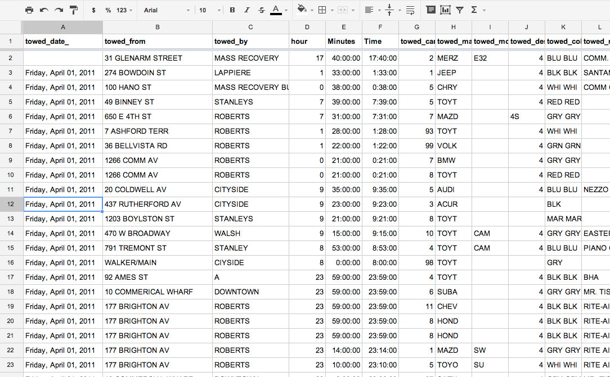
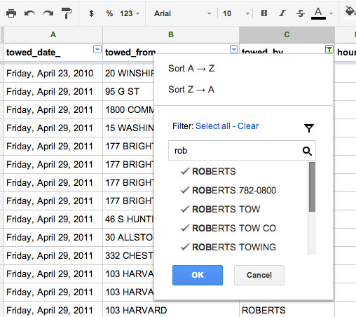
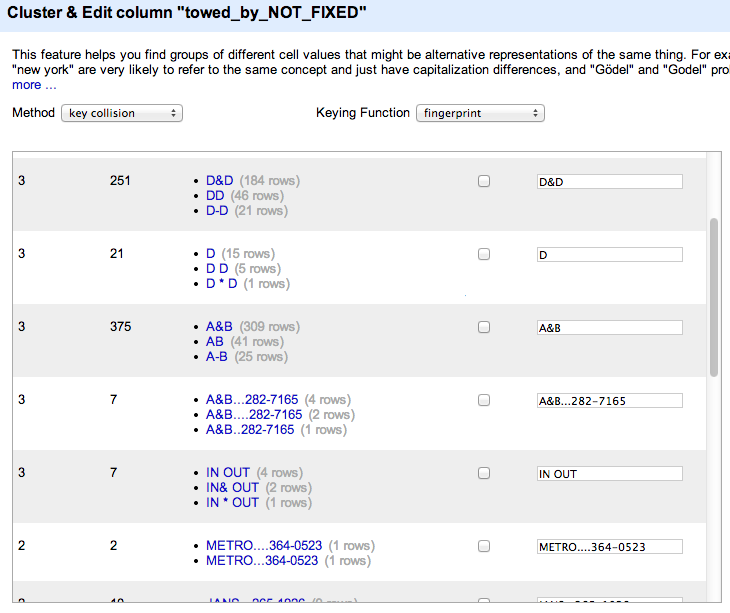
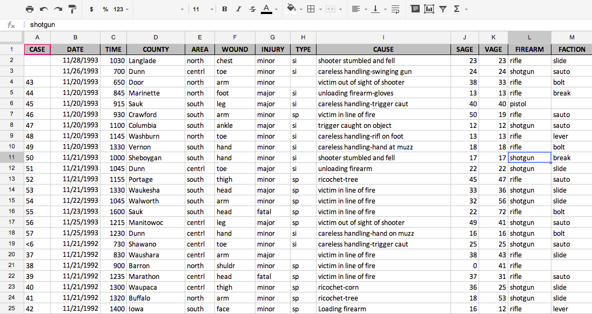
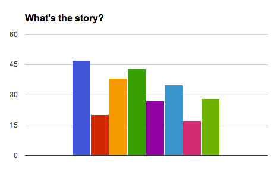

You’ll Fall in Love with Data or Your Money Back
#AAJAlovedata, #AAJA13
Two tools to help you:
- Google Refine
- Google Spreadsheets
Using Google Refine
to find and report a story
The graphics

The data: 246,000 tows

The problem: Messy spellings

The solution: Google Refine

A walk through
Google Refine
- Cleaning data
- Counting data
- Exporting data
Using Google Spreadsheets to find and report a story
To follow along
- Open up Google Chrome
- View the data at bit.ly/hunting-data
- Make a copy of it so you can edit it yourself
The data: 255 hunting accidents in Wisconsin

The problem:
What's the story?

Data analysis in (Google) Spreadsheets
- Prepping your data
- Finding Trends
- Asking questions about your results
What have we found?
- Same party injuries account for 50% of accidents
- The number of accidents per year is decreasing
- The top 5 reasons for accidents